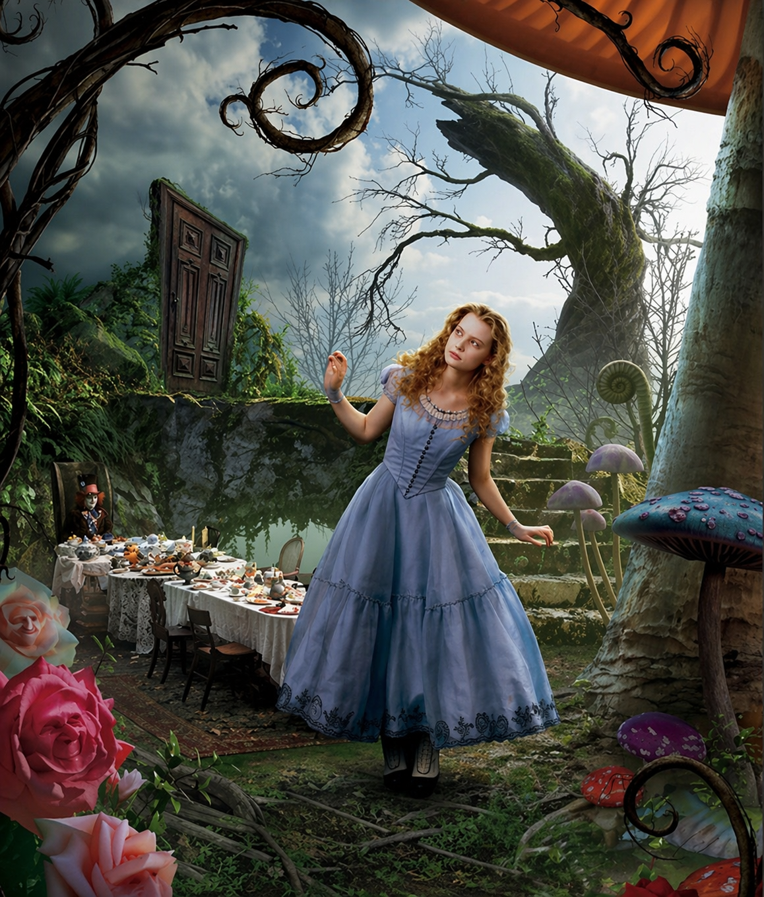
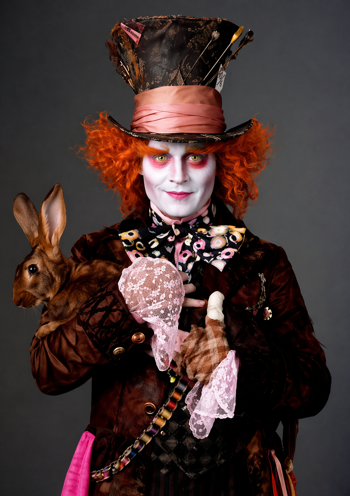
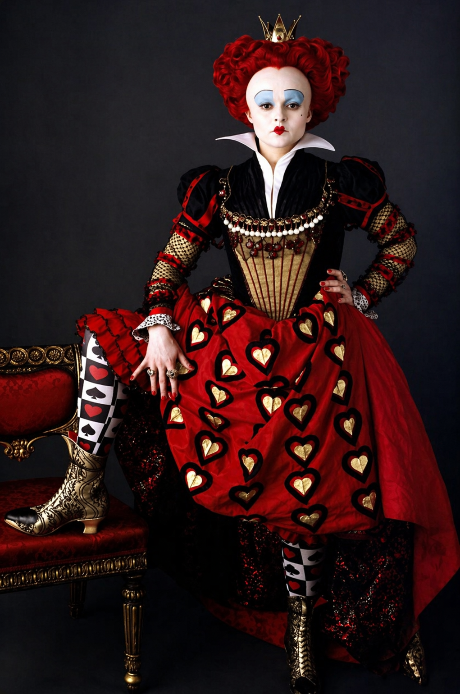
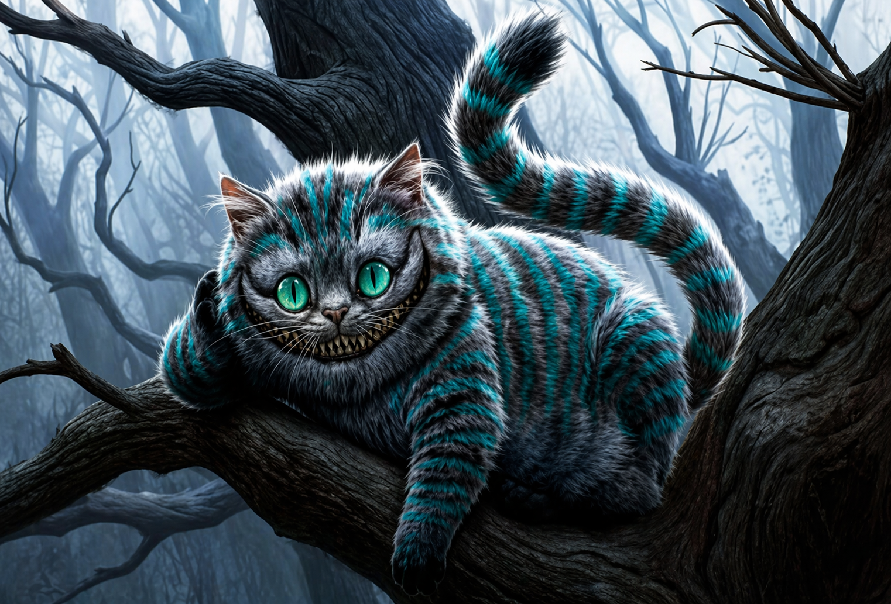

„Alicja w Krainie Czarów” to klasyczna powieść z gatunku literatury nonsensu i fantasy,
napisana przez Lewisa Carrolla i opublikowana po raz pierwszy w 1865 roku. Opowiada o niezwykłych
przygodach dziewczynki imieniem Alicja, która, podążając za Białym Królikiem, trafia do magicznego
świata pełnego dziwacznych postaci, zaskakujących zdarzeń i paradoksów logicznych.
Książka pełna jest absurdalnego humoru, gier językowych i fantastycznych sytuacji, które zachwycają
zarówno dzieci, jak i dorosłych czytelników. „Alicja w Krainie Czarów” uznawana jest za jedno z
najważniejszych dzieł literatury dziecięcej i nieprzerwanie inspiruje twórców na całym świecie.
Lewis Carroll, a właściwie Charles Lutwidge Dodgson (1832–1898), był brytyjskim pisarzem,
matematykiem, logikiem i fotografem. Przez wiele lat pracował jako wykładowca matematyki na
Uniwersytecie Oksfordzkim.
Zasłynął dzięki książkom „Alicja w Krainie Czarów” oraz „Po drugiej stronie lustra”, które do dziś
zachwycają oryginalnym stylem, zabawnymi dialogami i głęboką symboliką. Carroll był także pionierem
wczesnej fotografii, szczególnie portretów dzieci. Jego twórczość do dziś fascynuje czytelników w
każdym wieku i stanowi przykład literatury, która łączy rozrywkę z intelektualną zabawą.
Alicja w Krainie Czarów streszczenie
1. Początek podróży
Alicja, znudzona podczas siedzenia z siostrą nad rzeką, zauważa Białego Królika w kamizelce, który
nerwowo sprawdza zegarek i wyraźnie się spieszy. Zaciekawiona, podąża za nim i wpada do króliczej
nory. W ten sposób trafia do niezwykłej Krainy Czarów – pełnej absurdów, zaskakujących zjawisk i
dziwacznych postaci.
2. Magiczne zmiany i pierwsze spotkania
W tym osobliwym świecie Alicja wielokrotnie zmienia rozmiar, jedząc i pijąc magiczne przedmioty. Jej
łzy tworzą wielką kałużę, w której pływa z Myszą i innymi zwierzętami. Wspólnie biorą udział w
dziwacznym Wyścigu Komitetu, mającym na celu osuszenie się.
3. Przygody u Białego Królika i Pana Gąsienicy
Następnie Alicja trafia do domu Białego Królika, który myli ją ze swoją służącą. Wewnątrz znów rośnie
do olbrzymich rozmiarów, co powoduje zamieszanie i konieczność ucieczki. W lesie spotyka palącego
fajkę wodną Pana Gąsienicę, który uczy ją, jak za pomocą kawałków grzyba kontrolować swój rozmiar.
Po zjedzeniu grzyba jej szyja wydłuża się, co prowadzi do spotkania z Gołębicą, przekonaną, że
Alicja to wąż.
4. Wizyty w domach Krainy Czarów
Kolejne przygody prowadzą ją do domu Księżnej, gdzie kucharka gotuje zupę z ogromną ilością pieprzu,
a niemowlę przemienia się w prosiaka. Alicja spotyka także Kota z Cheshire, który potrafi znikać,
pozostawiając po sobie jedynie uśmiech. To on wyjaśnia jej, że wszyscy mieszkańcy tej krainy są
szaleni.
Dziewczynka bierze udział w Szalonym Podwieczorku u Marcowego Zająca, Zwariowanego Kapelusznika i
Susła. Spotkanie pełne jest nonsensownych rozmów i absurdalnych zwyczajów.
5. Królewski krokiet i spotkanie z Żółwicielą
W końcu Alicja trafia do królewskiego ogrodu, gdzie poznaje despotyczną Królową Kier i jej cichego
męża. Uczestniczy w chaotycznej grze w krokieta, w której używa się żywych flamingów i jeży zamiast
tradycyjnego sprzętu. Na rozkaz Królowej udaje się z Gryfem do Niby Żółwia, który opowiada jej swoją
smutną historię i wyjaśnia zasady dziwacznego tańca – Rakowego Kadryla.
6. Proces i przebudzenie
Kulminacją przygód Alicji jest absurdalny proces Waleta Kier, oskarżonego o kradzież ciastek. Podczas
rozprawy Alicja odzyskuje swój normalny wzrost, sprzeciwia się niesprawiedliwemu osądowi i nazywa
wszystkich uczestników zwykłą talią kart. Wtedy karty rzucają się na nią… i Alicja nagle się budzi.
7. Sen siostry
Okazuje się, że cała przygoda była tylko snem. Dziewczynka opowiada go siostrze, a ta – zamyślona –
również zaczyna marzyć o dziwacznym, pełnym cudów świecie Krainy Czarów.
Czas i miejsce akcji
Miejsce i czas akcji w świecie rzeczywistym
Miejscem akcji jest brzeg rzeki, wydarzenia dzieją się w upalny majowy dzień, od rana do zachodu Słońca, który ogląda po przebudzeniu siostra Alicji. Nie można dokładnie określić czasu akcji, ale prawdopodobnie jest to XIX wiek, czyli czasy współczesne autorowi (wtedy żyła Alice Liddell, będąca pierwowzorem baśniowej Alicji).
Miejsce akcji w Krainie Czarów
Alicja podczas swojej wędrówki przenosi się z miejsca na miejsce, poznając przy tym niezwykłe istoty. Miejsca, które spotyka na swej drodze, to m.in.:
Główni i drugoplanowi bohaterowie
Główna bohaterka
Alicja
Wiek: W książce nie podano dokładnego wieku Alicji. Ma około 10 lat.
Wygląd:
Ma jasne, bystre oczy.
Ma niesforne włosy, które opadają jej na czoło.
Jej wygląd często się zmienia – pod wpływem magicznych napojów i ciastek wielokrotnie zmienia
wzrost.
W książce nie ma informacji o kolorze włosów, sukience ani butach.

Kim jest?
Główna bohaterka powieści, która trafia do Krainy Czarów po tym, jak podąża za Białym Królikiem.
Cała historia okazuje się snem Alicji.
Cechy charakteru:
Ciekawa świata – podąża za Królikiem bez wahania.
Odważna – wchodzi do króliczej nory i sprzeciwia się Królowej Kier.
Logiczna – próbuje zrozumieć zasady rządzące Krainą Czarów.
Zdumiona – często dziwi się temu, co ją otacza.
Wrażliwa – płacze, gdy jest zagubiona.
Uczciwa i rozsądna – mówi prawdę i stara się zachować rozsądek.
Uprzejma, ale szczera – bywa zirytowana absurdami i nieuprzejmością innych.
Działania i przygody:
Podąża za Białym Królikiem i wpada do jego nory.
Zmienia rozmiar po jedzeniu i piciu magicznych substancji.
Pływa w kałuży własnych łez i bierze udział w Wyścigu Komitetu.
Spotyka wiele niezwykłych postaci: Białego Królika, Myszkę, Pana Gąsienicę, Gołębicę, Kota z
Cheshire, Kapelusznika, Marcowego Zająca, Susła, Księżną, Królową i Króla Kier, Gryfa, Niby
Żółwia.
Uczestniczy w Szalonym Podwieczorku i grze w krokieta z żywymi flamingami i jeżami.
Bierze udział w absurdalnym procesie Waleta Kier.
Budzi się i opowiada sen swojej siostrze.
Cytat:💬 „Ale jeśli nie jestem sobą, to w takim razie kim jestem? W tym tkwi największa
zagadka.”
Inne ważne postacie
Biały Królik
Biały Królik – postać, która rozpoczyna przygodę Alicji – to za nim dziewczynka podąża do
Krainy Czarów. Wzbudza zdumienie Alicji swoim nietypowym zachowaniem: nosi kamizelkę, mówi do
siebie i wyjmuje zegarek z kieszeni.
Wygląd:
Ma białe futerko i różowe oczy („biały królik o różowych ślepkach”).
Nosi kamizelkę i kieszonkowy zegarek.
Jest „bogato przyodziany” – sprawia wrażenie eleganckiego dżentelmena w pośpiechu.
W książce nie ma informacji o cylindrze lub innym nakryciu głowy.
Cechy charakteru:
Nerwowy i niespokojny – mówi „drżącym z trwogi głosikiem”, rozgląda się „trwożliwie
dokoła”.
Zabiegany i zestresowany – ciągle się spieszy, powtarza, że się spóźni.
Skoncentrowany na czasie – regularnie sprawdza zegarek, co podkreśla jego lęk przed
spóźnieniem.
Rola w historii:
To on prowadzi Alicję do Krainy Czarów – jego obecność wzbudza jej ciekawość i skłania ją do
wejścia do króliczej nory.
Jego nieustanny pośpiech i lęk przed spóźnieniem są ważnym elementem atmosfery absurdu
obecnej w książce.
Cytat:💬 „O rety, o rety, na pewno się spóźnię!” – doskonale oddaje jego panikę i
niepokój.
Kapelusznik
Kapelusznik – jedna z dziwacznych postaci zamieszkujących Krainę Czarów. Znany z
uczestnictwa w wiecznym podwieczorku razem z Marcowym Zającem i Susłem. Zostaje nazwany
„zwariowanym” przez Kota z Cheshire.
Wygląd:
W książce występuje jako „Kapelusznik”, ale nie pojawia się dokładny opis jego stroju.
Informacje o cylindrze z metką (np. „10/6”) pochodzą z późniejszych ilustracji i adaptacji –
nie są zawarte w tekście książki.

Cechy charakteru:
Szalony / absurdalny – mówi nielogicznie, zadaje zagadki bez odpowiedzi.
Nieuprzejmy i kłótliwy – przerywa Alicji, drażni się z nią, robi przycinki.
Zagubiony w czasie – przez konflikt z Czasem dla Kapelusznika zawsze trwa szósta,
czyli pora podwieczorku.
Chaotyczny i niechlujny – razem z Zającem przesuwa się wokół stołu, by korzystać z
czystych miejsc, zamiast zmywać naczynia.
Agresywny wobec Susła – szczypie go i próbuje wcisnąć do dzbanka z herbatą.
Rola w historii:
Uczestnik Szalonego Podwieczorku – jednej z najbardziej znanych scen w książce.
Swoim zachowaniem ukazuje brak logiki i nonsens rządzący Krainą Czarów.
Jego relacja z Czasem jest przykładem odwróconego porządku świata.
Cytat:💬 „Dla mnie teraz jest już zawsze szósta.” – zdanie to symbolizuje jego
wieczny podwieczorek i zerwanie z normalnym upływem czasu.
Marcowy Zając
Marcowy Zając – towarzysz Kapelusznika podczas wiecznej herbatki. Jest równie dziwaczny i
nonsensowny jak jego przyjaciel.
Wygląd:
W książce nie podano dokładnego opisu wyglądu Marcowego Zająca.
Cechy charakteru:
Zwariowany – określany jako „zwariowany” przez Kota z Cheshire i samego Kapelusznika.
Przewrotny – najpierw grzecznie częstuje Alicję winem, którego nie ma, a potem
zarzuca jej brak manier.
Nielogiczny i absurdalny – bierze udział w pełnych nonsensu rozmowach.
Znudzony – ziewając, mówi, że rozmowa go nudzi i proponuje zmianę tematu.
Agresywny wobec Susła – szczypie go i próbuje włożyć do dzbanka z herbatą.
Działania i reakcje:
Uczestniczy w wiecznym podwieczorku z Kapelusznikiem i Susłem.
Wrzuca zegarek Kapelusznika do herbaty.
Razem z Kapelusznikiem przesiada się wokół stołu, zamiast zmywać naczynia.
Próbuje wsadzić Susła do dzbanka.
Rola w historii:
Współtworzy słynną scenę Szalonego Podwieczorku – jedną z najbardziej znanych i absurdalnych
scen w książce.
Jego zachowanie i sposób mówienia doskonale ukazują chaos i brak logiki Krainy Czarów.
Cytat:💬 „Zmieńmy temat rozmowy – rzekł Szarak szeroko ziewając. – Zaczyna mnie to
już nudzić.”
Królikowa Królowa
Królikowa Królowa (Królowa Kier) – władczyni Krainy Czarów, zasiada na tronie u boku Króla Kier. Pojawia się w scenach dworskich i podczas gry w krokieta.
Wygląd:
Należy do rodziny królewskiej „naznaczonej kierami”.
W pochodzie jest „bogato przyozdobiona diamentami”.

Cechy charakteru:
Surowa i gniewna – patrzy groźnie, mówi podniesionym tonem.
Porywcza i impulsywna – łatwo wpada w złość, tupie nogami, rzuca przedmiotami (np. kałamarzem).
Bezwzględna – często i bez namysłu wydaje rozkazy ścięcia, nawet za drobne przewinienia.
Despotyczna – podejmuje decyzje arbitralnie, bez wyjaśnienia, kogo dotyczą.
Działania i reakcje:
Prowadzi orszaki królewskie.
Skazuje ogrodników na ścięcie za zasadzenie białych róż.
Organizuje absurdalne gry w krokieta – używa flamingów jako kijów, jeży jako kul, a żołnierzy jako bramek.
Ciągle wykrzykuje: „Ściąć go!”, „Ściąć ją!”.
Przewodniczy sądowi, przesłuchuje świadków.
Wścieka się na Alicję, gdy ta odmawia podporządkowania, i również każe ją ściąć.
Cytat:💬 „Ściąć go!” / „Ściąć ją!” – najczęściej powtarzane przez nią słowa.
Cheshire Cat
Cheshire Cat (Kiciuś z Cheshire, Kot z Cheshire, Kiciuś Dziwak) – fantastyczna postać z Krainy Czarów, znana z szerokiego uśmiechu i zdolności znikania. Spotyka Alicję w lesie i zapowiada, że zobaczy ją u Królowej Kier.
Wygląd:
Uśmiecha się „od ucha do ucha”.
Ma bardzo długie pazury i mnóstwo zębów.
Potrafi znikać częściowo – czasem zostaje tylko jego uśmiech lub sama głowa.

Cechy charakteru:
Zwariowany – sam przyznaje, że ma „bzika”, tak jak wszyscy w Krainie Czarów.
Filozoficzny i złośliwy – prowadzi z Alicją przewrotne rozmowy, porównując np. zachowanie kota i psa.
Tajemniczy – przewiduje przemianę dziecka Księżnej w prosiaka.
– nie przejmuje się uprzejmością.
Denerwujący – jego sposób pojawiania się i znikania irytuje Alicję.
Działania i reakcje:
Pojawia się i znika w najmniej oczekiwanych momentach.
Wskazuje Alicji drogę do Kapelusznika lub Marcowego Zająca.
Tłumaczy absurd Krainy Czarów i panujące w niej szaleństwo.
W sądzie wywołuje zamieszanie – nie wiadomo, co zrobić z jego znikającą głową.
Cytat:
💬 „Wszyscy mamy tutaj bzika. Ja mam bzika, ty masz bzika.”
💬 „Widziałam już koty bez uśmiechu – pomyślała Alicja – ale uśmiech bez kota widzę.”
Gąsienica
Gąsienica – niebieska gąsienica siedząca na grzybie i paląca fajkę. Spotyka Alicję w lesie, gdy ta próbuje odzyskać właściwy rozmiar.
Wygląd:
Jest „ogromnym, niebieskim panem Gąsienicą”.
Siedzi wygodnie z rękami skrzyżowanymi na piersi i pali olbrzymią fajkę.
Cechy charakteru:
Surowy i opryskliwy – mówi do Alicji pogardliwie i z wyższością.
Spokojny i niewzruszony – powoli pyka fajkę i nie przejmuje się rozmową.
Filozoficzny – zadaje Alicji pytanie „Kim jesteś?”, prowokując do przemyśleń.
Wiedzący – zna właściwości grzyba, które wpływają na wzrost.
Mądra
Działania i reakcje:
Rozmawia z Alicją o zmianach, jakie w niej zaszły.
Prosi ją o recytację wierszy i komentuje, że „zupełnie się nie zgadza”.
Wyjaśnia jej, że jedna strona grzyba powoduje wzrost, a druga – zmniejszanie się.
Ignoruje uwagi Alicji o łatwo urażalnych mieszkańcach Krainy Czarów.
Cytat:
💬 „Kim jesteś?”
💬 „Od jednej strony się rośnie, od drugiej – maleje.”
Pinokio - Problematyka i motywy literackie
problematyka
Pinokio to opowieść o tym, dlaczego nie warto być niegrzecznym i jakie korzyści wypływają ze
słuchania rad starszych osób. Gdybyśmy mogli się spotkać osobiście z Pinokiem, z pewnością
mógłby nam on udzielić wielu cennych wskazówek dotyczących tego, jak postępować, aby uniknąć
kłopotów, w jakie nieustannie popadają niegrzeczni i leniwi chłopcy. Kolejne wydarzenia i wypowiedzi
mają charakter pouczeń – to wskazówki dla młodego czytelnika, jakich wydarzeń należy unikać.
Cechy baśni w Pinokiu:
nie znamy dokładnego czasu ani miejsca akcji – nie wiemy, kiedy ani w jakim kraju mają
miejsce przygody Pinokia; w powieści występuje wiele miejsc fantastycznych (m.in. Kraina
Zabawek, Miasto Głupców), co dowodzi, że nie jest to świat, w którym żyjemy; występują tu liczne
postacie fantastyczne (wielki rekin, Gadający Świerszcz, Niebieska Wróżka, Pinokio, mówiące
zwierzęta i lalki żyjące wspólnie z ludźmi);
postaciom często przydarzają się fantastyczne przygody, czyli takie, które nie mogłyby
się zdarzyć w realnym świecie, np. zamiana chłopca w osła, połknięcie przez wielkiego rekina i
ucieczka z jego brzucha, przeistoczenie drewnianej lalki w prawdziwego chłopca;
powieść ta ma charakter dydaktyczny (uczy nas czegoś) – na przykładzie losów głównego
bohatera widzimy, jak powinniśmy postępować, i uczymy się, jakie są konsekwencje bycia
niegrzecznym;
Pinokio to utwór z morałem, czyli pouczającym wnioskiem, wypowiedzianym wprost lub
pozostawionym do odkrycia przez czytelnika.
Powieść jest zbudowana z trzydziestu sześciu rozdziałów. Każdy z nich nosi tytuł będący streszczeniem
wydarzeń, jakie w nim nastąpią. Narrator, czyli osoba opowiadająca, zwraca się czasem bezpośrednio
do nas, czytelników – np. za pośrednictwem zwrotów: „jak możecie sobie wyobrazić…”, „wyobraźcie
sobie…”, „jak zobaczycie…”, których używa w najciekawszych momentach książki, by rozbudzić naszą
ciekawość i uwagę.
Motyw przemiany i dorastania
Pinokio przechodzi wewnętrzną przemianę – z nieposłusznego i naiwnego pajacyka staje się
odpowiedzialnym i dobrym chłopcem. Proces ten symbolizuje dojrzewanie i naukę na własnych
błędach.
Cytat:
„Każda decyzja, którą podejmuję, przynosi konsekwencje – muszę nauczyć się odpowiedzialności
za swoje czyny.”
Motyw kłamstwa i jego konsekwencji
Pinokio wielokrotnie kłamie, co prowadzi do wzrostu jego nosa. Książka pokazuje, że kłamstwo ma
swoje konsekwencje i może przynieść więcej szkody niż pożytku.
Cytat:
„Za każdym razem, gdy kłamałem, mój nos rósł, przypominając mi, jak ważna jest prawda.”
Motyw opieki i wsparcia
Postać Wróżki o Niebieskich Włosach symbolizuje matczyną miłość i opiekę. Wspiera Pinokia w
trudnych chwilach, pomagając mu znaleźć właściwą drogę.
Cytat:
„Wróżka zawsze była przy mnie, kiedy jej potrzebowałem, pokazując mi, co znaczy prawdziwa
miłość i wsparcie.”
Motyw odpowiedzialności
Pinokio musi nauczyć się, że każde działanie ma swoje konsekwencje, a bycie prawdziwym chłopcem
oznacza bycie odpowiedzialnym za swoje czyny.
Cytat:
„Odpowiedzialność za moje czyny to pierwszy krok do stania się prawdziwym chłopcem.”
1 - Majster Wisienka znajduje kawałek drewna, który mówi i śmieje się jak dziecko.
Do starego stolarza - majstra Antonia - przypadkowo trafił kawałek najzwyklejszego drewna. Antonio
(zwany także Wisienką z powodu świecącego i fioletowego nosa) chciał zrobić z niego nogę do stolika.
Kiedy już miał uderzyć w pniaczek, usłyszał płaczliwy głosik „nie bij mnie zbyt silnie”. Zdziwił
się, pomyślał jednak, że mu się przywidziało, i znowu się zamierzył. Ale i tym razem usłyszał
głosik. Majster podejrzewał, że ktoś ukrył się w środku, zaczął więc wytrząsać tego kogoś. Wszystko
bez rezultatu. Zabrał się do heblowania, ale po chwili aż upadł z wrażenia, bo usłyszał: „Przestań!
Łaskoczesz mnie po całym ciele”.
2 - Majster Wisienka oddaje niezwykłe drewno swojemu przyjacielowi Dżeppettowi.
Wtedy właśnie zapukano do drzwi i wszedł staruszek Dżeppetto. Nosił jaskrawożółtą perukę i dlatego
nazywano go Mamałygą.
Dżeppetto chciał sobie wystrugać pajaca i przyszedł do stolarza po drewno. Na widok gościa pniaczek
zawołał „Mamałyga!” (a trzeba wiedzieć, że staruszek nie cierpiał tego przezwiska). Dżeppetto
pomyślał, że to stolarz robi mu złośliwości. Rzucił się więc na niego i przez chwilę trwała bójka.
Potem obaj staruszkowie pogodzili się, a Antonio wręczył przyjacielowi złośliwy kawałek drewna.
Ale i tym razem nie obeszło się bez przykrości. Pniaczek zaczął okładać Dżeppetta po nogach i znowu
Antonio został oskarżony. Po kolejnej bójce staruszkowie znów rozstali się w jak największej
przyjaźni.
3 - Dżeppetto struga pajaca i nadaje mu imię Pinokio. Pajacyk ożywa i ucieka z
domu.
Джеппетто, вернувшись в свою скромную комнатушку, быстро приступил к вырезанию куклы. По мере
создания новых частей кукла становилась все более невыносима: высовывал язык, дразнил, пинал. Тем не
менее Джеппетто остался очень доволен своей работой и назвал куклу Пиноккио.
Когда работа была окончена и марионетка смогла самостоятельно передвигаться, Джеппетто испытал свое
первое большое горе: Пиноккио сбежал из дома. Правда, карабинеры остановили его на улице и хотели
вернуть отцу, но зрители, наблюдавшие за всей этой сценой, сказали, что старик был жесток с
мальчиком. Поэтому карабинеры оставили Пиноккио в покое и посадили Джеппетто в тюрьму.
4 - Pinokio spotyka Gadającego Świerszcza, ale nie słucha jego rad i zabija
go.
Когда невинного Джеппетто увезли, счастливый Пиноккио быстро вернулся домой. Он думал, что он один в
комнате, но он ошибался. Еще был столетний Говорящий Сверчок. Пиноккио хотел сразу же его
вышвырнуть, но Сверчок сказал, что уйдет сам, как только скажет то, что должен сказать. От него
Пиноккио услышал, что непослушные мальчики, покинувшие родительский дом, всегда плохо кончают.
Сверчок посоветовал Пиноккио пойти в школу или научиться ремеслу. Пиноккио это не понравилось. Ему
хотелось бродить, есть, пить и веселиться, но учеба или работа его не устраивали. Наконец, все эти
лекции настолько разозлили его, что он убил Świerszcza.
5 - Głodny Pinokio próbuje przygotować jajko, lecz wykluwa się z niego pisklę.
В какой-то момент Пиноккио начал сожалеть о том, что сбежал и стал причиной несчастья своего отца. И
все эти жалобы исходили от того, что Пиноккио был голоден. Наконец, после тщательного обыска
комнаты, он нашел яйцо. Он хотел их поджарить, но когда он их сломал, птенец выскочил, поблагодарил
его за то, что его выпустили, и тут же убежала через окно. А Пиноккио становился все более голодным.
Не зная, что делать, он вышел из дома в поисках полезных людей.
6 - Pinokio zasypia przy ogniu i spala sobie drewniane nogi.
Морозной ночью, во время сильной бури, Пиноккио удалось добраться до деревни ночью. Но, конечно же,
все магазины в это время были закрыты. Поэтому он позвонил в случайный дверной звонок и попросил
хлеба.
Старик, живший там, подумал, что эти негодяи разыгрывают его, и вместо того, чтобы накормить
Пиноккио, вылил воду из окна.
После этой прогулки Пиноккио вернулся домой промокший насквозь и ещё более голодный. Желая
вытереться, он небрежно поставил ноги на раскалённую печь и заснул. На следующее утро он проснулся
без ног.
7 - Dżeppetto wraca do domu, opiekuje się Pinokiem i karmi go gruszkami.
На следующий день Джеппетто вернулся домой. Пиноккио попытался открыть дверь стучавшемуся Джеппетто,
но тот не смог подойти к двери, потому что у него не было ног. Наконец Джеппетто залез в окно и
понял, что на этот раз марионетка не лжет. Пиноккио обо всех своих приключениях, рассказал ему о
Сверчке, о голоде и об обожженных ногах. Старик был так тронут, что отдал Пиноккио весь свой
завтрак: три груши. Поначалу Пиноккио был очень придирчив. Он приказал очистить шкуру и не захотел
есть сердцевину, но когда он съел груши и все еще был голоден, он съел даже кожуру. Джеппетто
предупредил его, чтобы он не привыкал к изысканной еде, ведь никогда не знаешь, что преподнесет
судьба.
8 - Dżeppetto robi Pinokiowi nowe nogi i sprzedaje płaszcz, by kupić mu
elementarz.
Пиноккио плакал и просил Джеппетто полдня сделать ему новые ноги. Он пообещал, что будет хорошим,
пойдет в школу и поможет отцу. Джеппетто дал Пиноккио новые ноги. Он сделал это так красиво, что
Пиноккио с радостью захотел пойти в школу. Потом выяснилось, что у Пиноккио не было одежды, и
Джеппетто не мог позволить себе ее купить. Итак, старик сделал из бумаги аккуратный наряд с голубыми
цветочками, туфли из коры и шапку из сухарей. Чтобы купить сыну букварь, Джеппетто продал свою
единственную куртку и, хотя была зима, носил только жилет.
9 - Pinokio idzie do szkoły, ale sprzedaje książkę i idzie do teatru
marionetek.
Пиноккио впервые пошёл в школу. По пути он вынашивал планы использовать свои таланты, чтобы научиться
читать, писать и считать за три дня. А потом, получив такое образование, он заработает кучу денег и
купит отцу красивую куртку.
Идя по улице, он вдруг услышал звуки флейт и барабанов. Он задумался, куда идти, и наконец решил, что
время на школу всегда найдется, но с барабанами и флейтами никогда не знаешь, что будет.
Подойдя к музыке, он увидел плакат, но не смог его прочитать. Мальчик, которого он просил о помощи,
посмеялся над его невежеством и сказал ему, что афиша сообщала о спектаклях Театра марионеток.
Пиноккио сразу захотел посмотреть спектакль, а так как денег на входной билет у него не было, то он
продал свой ценный букварь.
Тем временем Джеппетто сидел дома, замерзая и радуясь тому, что его сын наконец-то начал учиться.
10 - W teatrze marionetki rozpoznają Pinokia, a przedstawienie zostaje
przerwane.
Буратино опаздывал и когда он вошел в зал, представление уже шло. Во время представления куклы
заметили среди зрителей Пиноккио. Они начали здороваться со своим деревянным братом. Когда на сцену
выскочил Пиноккио, куклы не смогли скрыть своей радости. Шоу было прервано. Возмущенная публика
потребовала возобновить игру. Затем на сцену выскочил режиссер «Пожиратель огня». Он очень
рассердился и тут же навел порядок. Он обвинил Пиноккио в том, что он прервал представление
Когда после представления режиссёр жарил ягнёнка, у него закончились дрова. Тогда он приказал
привести Пиноккио и бросить его в огонь.
11 - Ogniojad chce spalić Pinokia, lecz wzruszony daruje mu życie.
Хотя директор выглядел устрашающе, на самом деле он был добросердечным человеком. Ogniojada был
тронут историей Пиноккио и решил сохранить ему жизнь, хотя для этого потребовалось принести в жертву
Арлекина — ягненка, которого нужно было зажарить. Пиноккио отказался, он не хотел, чтобы вместо него
пострадал кто-то другой. Пиноккио предложил самому прыгнуть в огонь. Режиссеру такое отношение очень
понравилось, и он решил съесть полусырую баранину.
12 - Pinokio dostaje pięć złotych monet i spotyka Lisa oraz Kota.
На следующий день Пожиратель Огня позвонил Пиноккио и спросил о Джеппетто, а когда узнал о бедности
старика и о проданной им куртке, дал ему пять золотых и велел как можно быстрее возвращаться домой.
На обратном пути Пиноккио встретил Лису, притворившуюся хромой, и Кота, притворившуюся слепой. Он
услышал от них, что Джеппетто весь предыдущий день ждал возвращения сына из школы. Он был очень
тронут этой новостью и скучал по папе.
Когда Лиса и Кот увидели деньги Пиноккио, они посоветовали ему отправиться с ними в Страну Дураков.
Есть чудесное поле, где растут денежные деревья. Все, что вам нужно сделать, это закопать несколько
монет, посыпать солью и полить двумя ведрами родниковой воды, и на следующий день появится дерево,
покрытое золотом. Поначалу Пиноккио не мог на это решиться, потому что ему очень хотелось вернуться
к папе. Но потом, когда Лиса и Кот подсчитали, какую выгоду он может получить от своих пяти злотых,
он забыл о своих обещаниях вернуться домой и пошел с ними.
13 - Pinokio nocuje w gospodzie „Pod Czerwonym Rakiem” i zostaje oszukany.
Шли они целый день и к вечеру добрались до трактира «Красный рак». Лиса и Кот сытно поужинали за счет
Пиноккио. Затем все трое легли спать, а в полночь им предстояло продолжить путь. Когда Пиноккио
проснулся, оказалось, что его спутники ушли раньше. Поэтому ему пришлось идти одному, в темноте
ночи.
Затем он встретил Тень Говорящего Сверчка, которая посоветовала ему отнести оставшиеся деньги отцу и
не верить его обещанию внезапного богатства. Но Пиноккио, как обычно, отказался прислушаться к
здравому совету и ушёл.
14 - Pinokio zostaje napadnięty przez zbójców przebranych za Lisa i Kota.
По пути он пренебрежительно думал о словах Говорящего Сверчка и считал, что тот достаточно умен и
находчив, чтобы самому предотвратить мошенничество. Пока внезапно на него не напали две фигуры в
масках. Пиноккио сумел спрятать деньги под языком и никоим образом не позволил их у себя отобрать.
По этой причине он откусил лапу одному из нападавших и даже немного удивился, когда это оказалась
кошачья лапа. В подходящий момент Пиноккио удалось скрыться, но грабители упорно преследовали его.
15 - Pinokio trafia do domu Wróżki o Niebieskich Włosach i kłamie – rośnie mu
nos.
Он бежал долго, пока не достиг небольшого белого домика за лесом. Он начал стучать в дверь, но никто
ее не открыл. Только красивая девушка с синими волосами появилась у окна и сказала ему, что он не
может войти в дом, потому что там больше никто не живет, все мертвы.
Наконец грабители догнали его и, не сумев вытащить деньги изо рта, повесили его на Большом Дубе и
стали ждать, пока он умрет. Поскольку это занимало слишком много времени, они оставили его и
пообещали вернуться на следующий день. Когда Пиноккио повесили, он сильно пострадал. Подбрасываемый
порывами ветра, он ослабел, открыл рот и потерял сознание.
16 - Doktorzy badają Pinokia, a Wróżka znika, zostawiając go samego.
Девушка, выглянув в окно, увидела висящего Пиноккио и пожалела его. Поэтому она быстро послала сокола
и приказала ему перерезать веревку. Тогда она приказала ливреевому пуделю поехать за Пиноккио в
карете. Сама карета выглядела весьма своеобразно. Он был прозрачным, изнутри покрыт взбитыми
сливками, и его тянули двенадцать белых мышей. Как оказалось, красивая девушка была доброй Феей,
которая уже сто лет жила в белом доме за лесом.
Когда принесли Пиноккио, она позвала трёх врачей: Ворона, Сову и Говорящего Сверчка. Они должны были
сказать, жив ли еще Пиноккио. Ворон и Сова осмотрели его и не вынесли однозначного вердикта. Однако
Говорящий сверчок использовал другой метод, чтобы проверить, жив ли Пиноккио. Речь шла о хулигане и
бродяге, который является плохим сыном и доставляет неприятности своему папе. Пиноккио, слушая слова
Сверчка, расплакался.
17 - Pinokio znów wierzy Lisowi i Kotu i zakopuje monety na Polu Cudów.
Когда Пиноккио выздоровел, оказалось, что у него очень высокая температура. Фея дала ему лекарство,
которое он отказался пить. Она пыталась подкупить его кусочками сахара, но он съел сахар и не запил
лекарство. Наконец, гадалка сказала ему, что если он еще будет гримасничать, то умрет. Словно в
подтверждение ее слов в комнату вошли четыре черных кролика с гробом. Пиноккио так испугался, что
тут же выпил горькое лекарство. И через час он был здоров.
По просьбе гадалки он рассказал о нападении грабителей, но когда она спросила его, что случилось с
деньгами, он соврал, что их у него нет, потому что он потерял или проглотил монеты. С каждой ложью
его нос становился все длиннее и длиннее. Он стал настолько большим, что Пиноккио не мог выйти из
комнаты.
18 - Papuga zdradza Pinokiowi prawdę o oszustwie Lisa i Kota.
Фея преподала лжецу урок, но затем сжалилась над ним и призвала дятлов, которые отрезали ему
разросшийся нос.
Девушке понравился Пиноккио, и она предложила ему остаться в белом доме. Пиноккио был очень рад, и
его радость была еще больше, когда он узнал, что Джеппетто тоже будет жить с ними. Пиноккио пошёл
навстречу папе и по дороге возле Большого Дуба увидел Лису и Кота. Он спросил, что случилось с
кошачьей лапой, и услышал историю о голодающих животных, которых кошка спасла, дав им съесть свою
лапу. Они снова предложили ему пойти на поле чудес и сказали, что ему нужно поторопиться, потому что
на следующий день поле будет продано. Пиноккио помнил своего папу, Фею и Сверчка, но все равно пошел
с Лисой и Котом.
Через несколько часов пути они достигли города Хвитайцимбалув. Там Пиноккио заметил собак и кошек без
шерсти, бабочек без крыльев, павлинов без хвостов и кур без гребней. И между всеми этими бедняками
время от времени проезжали повозки с лисами, сороками и другими хищниками.
Кот и Лис привели Пиноккио на чудесное поле. Клоун закопал монеты в землю и ушёл на несколько часов.
19 - Sędzia Goryl wtrąca Pinokia do więzienia, skąd wychodzi dzięki
kłamstwu.
Когда Пиноккио вернулся, деревца уже не было. Он начал поливать закопанные монеты, но вдруг услышал
смех ощипанной Попугаихи. От неё он узнал об обмане Лиса и Кота. Попугаиха рассказала, что и сама
когда-то была обманута и хорошо знает, что «чтобы честно накопить хоть несколько грошей, нужно уметь
заработать их собственным трудом или собственным умом».
Пиноккио отправился жаловаться судье Горилле, но не только не получил никакой помощи, а ещё и был
брошен в тюрьму. Там он провёл четыре месяца. Освободили его лишь потому, что император победил
своих врагов в городе и в порыве радости приказал выпустить всех разбойников. Пиноккио солгал, что
он тоже является преступником, и таким образом оказался на свободе.
20 - Pinokio spotyka węża, wpada w błoto i trafia w pułapkę na kuny.
Как можно быстрее Пиноккио покинул город и направился к дому Феи. По дороге он размышлял о себе и
своём непослушании. Теперь он уже знал, как плохо приходится мальчикам, которые не слушают добрых
советов.
По пути он увидел змею, лежавшую поперёк дороги. Змея была огромной и к тому же изрыгала дым.
Пиноккио сел и стал ждать, пока она уйдёт. Это длилось слишком долго, и тогда он решился
перепрыгнуть через неё. Но в этот момент поскользнулся и упал в грязь. Змея, увидев это, так
расхохоталась, что лопнула, и дорога стала свободной.
Пиноккио проголодался и, чтобы поесть, зашёл на ближайшее виноградное поле. Там ему не повезло — он
попал в ловушку для куниц.
21 - Pinokio zostaje przywiązany przy budzie jako stróż zamiast psa.
Пришёл хозяин поля и принял Пиноккио за вредителя, который ворует кур из курятника. Он отвёл его в
хижину и привязал возле будки, чтобы тот охранял двор вместо недавно погибшей собаки.
22 - Pinokio nie zgadza się na kradzież i pomaga schwytać kuny.
Ночью Пиноккио разбудили шорохи. Оказалось, что пришли четыре куницы. Они предложили ему такой же
уговор, какой был у них с собакой: если раз в неделю он будет позволять им воровать, то получит
часть добычи. Пиноккио сделал вид, что согласился. Когда куницы вошли в курятник, он запер их там и
поднял тревогу. Хозяин обрадовался и освободил Пиноккио.
23 - Pinokio dowiaduje się o rzekomej śmierci Wróżki i wyrusza szukać
ojca.
Пиноккио наконец добрался до места, где раньше стоял дом Феи. Теперь там была только табличка с
надписью о том, что Фея умерла от горя после потери Пиноккио. Он очень опечалился и долго плакал.
Вдруг прилетел Голубь и рассказал, что несколько дней назад отвёз Джеппетто к морю. Старик хотел
искать своего сына за океаном. Голубь предложил отнести Пиноккио туда, где он оставил его отца.
Они долго летели. Когда добрались до места, Джеппетто там уже не было. В бушующем море Пиноккио
увидел лодку с отцом, но вскоре она исчезла в волнах. Пиноккио прыгнул в море, чтобы спасти его, но,
несмотря на то что он был лёгким и хорошо плавал, отца найти не смог.
24 - Pinokio dopływa na Wyspę Pracowitych Pszczół.
Пиноккио плыл всю бурную ночь. Утром он достиг берега неизвестного острова. Проплывающий мимо дельфин
сообщил ему, что это Остров Трудолюбивых Пчёл, а также предупредил о громадной акуле, которая
свирепствует поблизости.
Пиноккио отправился вглубь острова и дошёл до города. Он был очень голоден, но стыдился просить
милостыню, ведь отец учил его, что «просить подаяние могут только те, кто из-за старости или болезни
уже не в состоянии заработать на хлеб собственным трудом». Однако, увидев угольщика, он забыл об
этом и попросил милостыню. Тот предложил дать деньги за помощь в перевозке тележек, но Пиноккио
обиделся — он хотел есть, а не работать. В конце концов, соблазнившись хорошей едой, он помог
женщине нести лейки с водой и узнал в ней свою добрую Фею.
25 - Wróżka staje się dla Pinokia matką, a on obiecuje poprawę.
Фея уже была не девочкой, а взрослой женщиной. Она стала для Пиноккио доброй матерью, а он пообещал
быть хорошим сыном — настолько хорошим, чтобы однажды заслужить право стать настоящим мальчиком.
Пиноккио пообещал ходить в школу и получить профессию или выучить ремесло, потому что «в этом мире
каждый человек, богатый он или бедный, обязан чем-то заниматься, что-то делать и работать».
26 - Pinokio pilnie się uczy, ale ulega złemu towarzystwu.
Пиноккио остался на Острове Трудолюбивых Пчёл и пошёл в школу. Он был прилежным, старательным и
способным учеником. Сначала одноклассники смеялись над его внешностью, но, узнав силу его пинков,
стали относиться к нему с уважением.
Учителя и Фея радовались его успехам, но тревожились из-за плохой компании. Они боялись, что друзья
собьют Пиноккио с правильного пути — и так и случилось. Мальчики рассказали ему о якобы появившейся
у берега акуле и предложили пойти посмотреть. Любопытство взяло верх, и Пиноккио пошёл с ними. Акулы
не оказалось — мальчики просто хотели, чтобы он прогулял школу и потерял репутацию отличника. Из-за
этого началась драка.
27 - Dochodzi do bójki, Pinokio zostaje niesłusznie oskarżony i ucieka.
Один из мальчиков хотел ударить Пиноккио тяжёлой книгой, но случайно попал в другого ученика. Тот
потерял сознание, а остальные убежали. Пиноккио остался и пытался помочь пострадавшему. Пришли
карабинеры и признали Пиноккио виновным. Они хотели отвести его в тюрьму, но по дороге ему удалось
сбежать. За ним погнался бульдог.
28 - Pinokio ratuje buldoga i sam zostaje uratowany przez niego.
Пиноккио прыгнул в воду, и собака последовала за ним. Однако оказалось, что бульдог не умеет плавать,
и если бы Пиноккио не помог ему, он бы утонул. Они расстались друзьями.
Пиноккио продолжал плыть вдоль берега и попал в рыболовную сеть. Рыбак обвалял его в муке, как
обычную рыбу, и хотел бросить на сковороду. В этот момент в пещеру вбежал бульдог, привлечённый
запахами. Это была та самая собака, которую спас Пиноккио. Узнав своего спасителя, пёс схватил его и
убежал.
29 - Pinokio znów kłamie, nos mu rośnie, ale Wróżka daje mu ostatnią
szansę.
Освобождённый Пиноккио направился к городу. По дороге он зашёл в рыбацкую деревню, чтобы узнать о
раненом мальчике. Ему сказали, что тот поправляется, но все считают, что Пиноккио — хулиган, который
его избил, и должен быть строго наказан. Не признаваясь, кто он такой, Пиноккио начал хвалить
Пиноккио, но в тот же миг его нос опасно удлинился.
Когда он добрался до города, уже был поздний вечер. Он постучал в дом Феи, но все спали. Привратник
Улитка всю ночь спускался с четвёртого этажа. За это время голодный и уставший Пиноккио рассердился
и пнул дверь. Его нога застряла в дереве, и он не мог её вытащить. Утром дверь открыли, но пришлось
ждать плотника. Когда Улитка принёс завтрак, оказалось, что еда была искусственной. Пиноккио потерял
сознание и очнулся уже в доме.
Фея дала ему ещё один шанс. Целый год он прилежно учился и в конце получил диплом с отличием. В
награду за хорошее поведение он должен был превратиться в мальчика, и Фея готовила праздник.
30 - Pinokio spotyka Knota, który namawia go na wyjazd do Krainy Zabawek.
Пиноккио пошёл приглашать друзей на праздник. Долго он не мог найти Кнута. Наконец он нашёл его на
чердаке, где тот готовился ехать в Страну Игрушек и уговаривал Пиноккио поехать вместе с ним,
рассказывая о вечных развлечениях и безделье.
31 - Pinokio jedzie do Krainy Zabawek.
Пиноккио не хотел ехать, но и уйти не решался. Наконец приехала повозка, запряжённая двенадцатью
парами осликов, у каждого из которых были детские башмачки. Все места были заняты, и Кнуту пришлось
сесть на оглоблю. Когда Пиноккио решил ехать, возница велел ему сесть на ослика, но тот сбрасывал
его. Тогда возница откусил ослику по кусочку каждого уха, и животное подчинилось. По дороге Пиноккио
услышал тихий голос, упрекавший его, но он не обратил на это внимания. Пять месяцев в Стране Игрушек
он отлично проводил время.
32 - Pinokio zamienia się w osła.
Однажды утром Пиноккио обнаружил у себя ослиные уши и голову. Он узнал, что все ленивые мальчики,
презирающие школу и книги, рано или поздно превращаются в ослов. Он встретил Кнута и увидел, что с
ним произошло то же самое. Вместо того чтобы расстроиться, они начали дурачиться. Вскоре у них
выросли хвосты, и через несколько часов они окончательно стали ослами.
33 - Pinokio pracuje w cyrku i zostaje sprzedany.
На следующий день их продали на рынке. Кнут попал к крестьянину, а Пиноккио купил директор цирка,
который хотел иметь дрессированного осла. Три месяца Пиноккио тяжело работал, терпел побои и ел
сено. Во время первого выступления он увидел Фею, но от огорчения неудачно прыгнул и сломал ногу.
Ветеринар решил, что осёл больше не годится для выступлений, и его продали человеку, который хотел
сделать из его шкуры барабан. Тот отвёл Пиноккио к морю, чтобы утопить его.
34 - Pinokio wraca do postaci pajaca i zostaje połknięty przez rekina.
Когда купец потянул за верёвку, вместо осла из воды появился Пиноккио. Рыбы съели ослиное тело, и он
вернулся к прежнему облику. Купец решил продать его как дрова, но Пиноккио убежал в море. Он увидел
Фею в образе голубой козы, но прежде чем доплыл до неё, был проглочен огромной акулой. В её брюхе он
встретил Тунца и решил искать выход.
35 - W brzuchu rekina Pinokio odnajduje Dżeppetta i ucieka z nim.
Пиноккио увидел накрытый стол и свечу. За столом сидел Джеппетто. Отец рассказал, что уже два года
живёт в брюхе акулы благодаря запасам с проглоченного корабля. Когда акула заснула с открытой
пастью, они сбежали.
36 - Pinokio ciężko pracuje, pomaga ojcu i zostaje nagrodzony – staje się
prawdziwym chłopcem.
Пиноккио нёс отца на плечах и плыл, пока не выбился из сил. Им помог Тунец. На берегу они встретили
Лиса и Кота, но Пиноккио не стал им помогать. Он тяжело работал, заботился об отце и отдал все
деньги больной Фее. За доброту и самоотверженность Пиноккио был награждён — он стал настоящим
мальчиком.
1. Dlaczego Pinokio chciał stać się prawdziwym chłopcem?
ℹ️
Pinokio pragnął stać się prawdziwym chłopcem, ponieważ chciał być jak inne
dzieci,
czuć się akceptowanym i spełniać marzenia swojego ojca, Dżepetta. Cytat: „Marzę o tym, żeby
stać
się prawdziwym chłopcem i uszczęśliwić mojego tatę, Dżepetta.”
2. Jakie były konsekwencje kłamstw Pinokia?
ℹ️
Za każdym razem, gdy Pinokio kłamał, jego nos rósł, co przypominało mu, że
kłamstwo
jest złe i przynosi tylko problemy. Cytat: „Za każdym razem, gdy kłamałem, mój nos rósł,
przypominając mi, jak ważna jest prawda.”
3. W jaki sposób Wróżka o Niebieskich Włosach pomagała Pinokiowi?
ℹ️
Wróżka opiekowała się Pinokiem, udzielała mu rad i pomagała w trudnych chwilach,
prowadząc go ku właściwej drodze. Cytat: „Wróżka zawsze była przy mnie, kiedy jej
potrzebowałem,
pokazując mi, co znaczy prawdziwa miłość i wsparcie.”
4. Jakie lekcje Pinokio wyniósł ze swoich przygód?
ℹ️
Pinokio nauczył się, że kłamstwo ma swoje konsekwencje, a odpowiedzialność i
uczciwość są kluczowe do stania się dobrym człowiekiem. Cytat: „Odpowiedzialność za moje
czyny
to pierwszy krok do stania się prawdziwym chłopcem.”
5. Jakie znaczenie ma postać Dżepetta w życiu Pinokia?
ℹ️
Dżepetto jest ojcem Pinokia, który kocha go bezwarunkowo i pragnie jego
szczęścia. Jego miłość i troska są motorem napędowym przemiany Pinokia. Cytat: „Dżepetto
kochał mnie, nawet gdy byłem tylko drewnianą kukiełką – chciałem spełnić jego marzenie i stać
się prawdziwym chłopcem.”
6. Co symbolizuje rosnący nos Pinokia?
ℹ️
Nos Pinokia symbolizuje skutki kłamstwa i brak uczciwości. Za każde kłamstwo nos
się wydłuża, co pokazuje, że kłamstwo ma konsekwencje. Cytat: „Za każdym razem, gdy
kłamałem, mój nos rósł, przypominając mi, jak ważna jest prawda.”
7. Jakie przygody Pinokio przeżywa w trakcie swojej podróży?
ℹ️
Pinokio spotyka wiele postaci, wpada w kłopoty, uczy się ważnych lekcji i
przechodzi przez różne niebezpieczeństwa, które pomagają mu dorosnąć. Cytat: „Każda przygoda
uczyła mnie czegoś nowego o życiu i o sobie.”
8. Dlaczego Pinokio ucieka ze szkoły?
ℹ️
Pinokio ucieka ze szkoły, bo woli zabawę i przygody niż naukę, co prowadzi go do
wielu problemów. Cytat: „Wolałem biegać i bawić się niż siedzieć w ławce i się uczyć.”
9. Jakie znaczenie ma postać lisa i kota w historii?
ℹ️
Lis i kot to oszuści, którzy chcą wykorzystać Pinokia, ucząc czytelników, że
trzeba być ostrożnym i nie ufać każdemu. Cytat: „Lis i Kot chcieli wykorzystać naiwność
Pinokia.”
10. Jak Pinokio odnajduje swojego ojca Gepetta?
ℹ️
Pinokio odnajduje Gepetta po wielu przygodach, nawet gdy zostaje połknięty przez
wieloryba, co pokazuje siłę rodzinnych więzi. Cytat: „Wieloryb nie mógł nas rozdzielić – w
końcu znaleźliśmy się razem.”
11. Co Pinokio rozumie o pracy i obowiązkach?
ℹ️
Pinokio uczy się, że praca i odpowiedzialność są ważne, aby stać się dobrym i
prawdziwym człowiekiem. Cytat: „Praca to nie kara, lecz droga do szczęścia i wolności.”
12. Jakie znaczenie ma przemiana Pinokia w prawdziwego chłopca?
ℹ️
Przemiana symbolizuje nagrodę za naukę, dojrzałość i dobre serce, które Pinokio
zdobywa dzięki swoim doświadczeniom. Cytat: „Stałem się prawdziwym chłopcem, bo nauczyłem
się kochać i być uczciwym.”
13. Jakie wartości przekazuje książka „Pinokio”?
ℹ️
Książka uczy o uczciwości, odpowiedzialności, miłości, pracy i sile
przemiany. Cytat: „Każdy może się zmienić, jeśli tylko chce i uczy się na błędach.”
14. Dlaczego Pinokio czasem popełnia błędy?
ℹ️
Ponieważ jest jeszcze dzieckiem i uczy się życia, popełnia błędy, które pomagają
mu dorosnąć. Cytat: „Błędy są częścią nauki i drogi do bycia lepszym.”
15. Jakie znaczenie ma miłość Gepetta dla Pinokia?
ℹ️
Miłość Gepetta daje Pinokiowi siłę i motywację do zmiany i stania się prawdziwym
chłopcem. Cytat: „Miłość ojca była moim największym skarbem i siłą.”
GATUNEK
Pinokio to powieść przygodowa, co oznacza, że najważniejsze w niej są liczne przygody
bohatera, o których opowiada nam narrator. Gatunek ten należy do epiki. Występuje w nim narrator,
czyli osoba, która opowiada, bohaterowie, możemy wskazać kolejne wydarzenia.
Powieść Carla Collodiego ma również liczne cechy, które zwykle przypisujemy baśni (choć choć sama się
do tego gatunku nie zalicza). Cechy baśni w Pinokiu:
nie znamy dokładnego czasu ani miejsca akcji – nie wiemy, kiedy ani w jakim kraju mają
miejsce przygody Pinokia; w powieści występuje wiele miejsc fantastycznych (m.in. Kraina
Zabawek, Miasto Głupców), co dowodzi, że nie jest to świat, w którym żyjemy; występują tu liczne
postacie fantastyczne (wielki rekin, Gadający Świerszcz, Niebieska Wróżka, Pinokio, mówiące
zwierzęta i lalki żyjące wspólnie z ludźmi);
postaciom często przydarzają się fantastyczne przygody, czyli takie, które nie mogłyby
się zdarzyć w realnym świecie, np. zamiana chłopca w osła, połknięcie przez wielkiego rekina i
ucieczka z jego brzucha, przeistoczenie drewnianej lalki w prawdziwego chłopca;
powieść ta ma charakter dydaktyczny (uczy nas czegoś) – na przykładzie losów głównego
bohatera widzimy, jak powinniśmy postępować, i uczymy się, jakie są konsekwencje bycia
niegrzecznym;
Pinokio to utwór z morałem, czyli pouczającym wnioskiem, wypowiedzianym wprost lub
pozostawionym do odkrycia przez czytelnika.
Powieść jest zbudowana z trzydziestu sześciu rozdziałów. Każdy z nich nosi tytuł będący streszczeniem
wydarzeń, jakie w nim nastąpią. Narrator, czyli osoba opowiadająca, zwraca się czasem bezpośrednio
do nas, czytelników – np. za pośrednictwem zwrotów: „jak możecie sobie wyobrazić…”, „wyobraźcie
sobie…”, „jak zobaczycie…”, których używa w najciekawszych momentach książki, by rozbudzić naszą
ciekawość i uwagę.